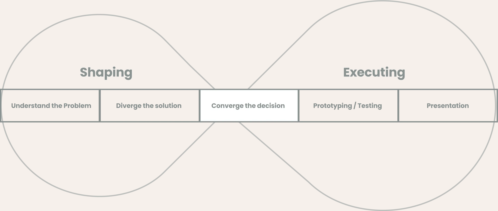
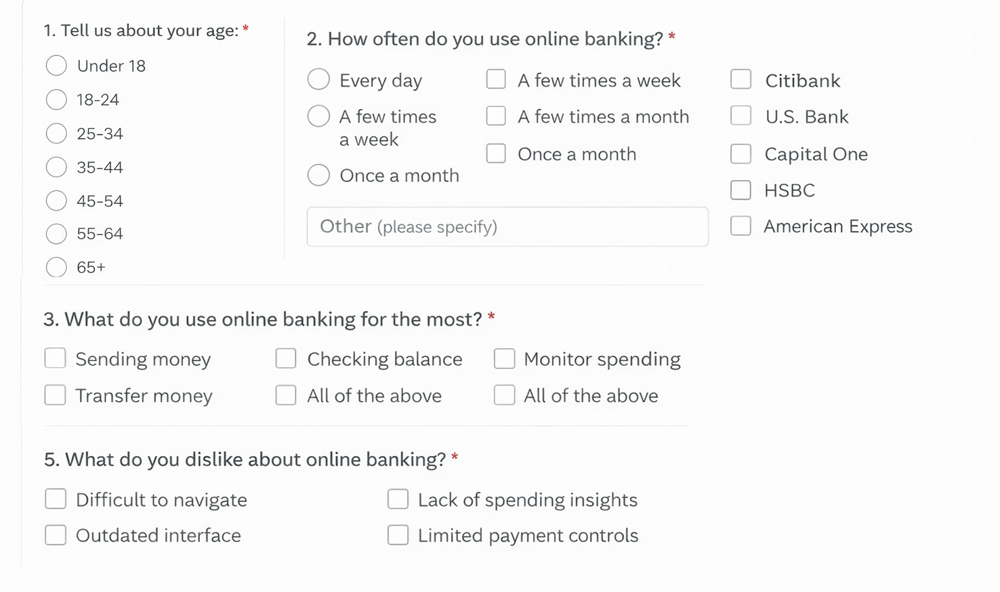
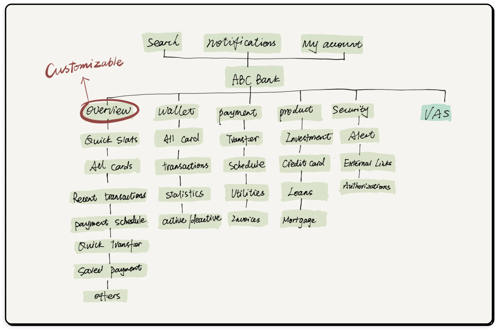

Project Overview
This project was part of a design test for a fintech company. The task was to design a new feature for an online banking website. The feature should help users understand how they use their credit or debit cards.
I created an interactive prototype that includes the main page and the key workflow of the feature. In this case study, I explain my design steps and how my ideas developed during this short project.
The Problem
Users struggled to understand their financial data due to interface complexity and poor information hierarchy.
- Cluttered Interface : Too much information displayed at once with no clear visual hierarchy, making it hard to find important data.
- Poor Navigation : Users couldn't easily track transactions or understand spending patterns across different card categories.
- Cognitive Overload : Complex layouts and unclear data visualization increased cognitive load and user frustration.
- Limited Insights : Lack of spending insights and analytics made it difficult for users to manage their finances effectively.
Problem
Users struggled to understand their card usage and spending because the dashboard was cluttered and difficult to navigate.
User Pain Points
Users found it difficult to track their recent transactions and understand their card usage due to the cluttered and complex interface.
Solution
Designed a customizable dashboard with clear data visualization and structured information hierarchy.
Impact
Improved financial visibility and made it easier for users to track spending and manage their accounts.
Process Overview
Given the limited time for this project, I followed a structured design process that included understanding the problem, exploring solutions, making decisions, prototyping, testing, and delivering the final result.
- Clean card-based layout
- Visual hierarchy for account balance and transactions
- Interactive charts for spending insights
- Quick action buttons for common tasks

Defining the Problem
Before starting user research, I first studied the fintech market to understand existing digital banking solutions. I wanted to identify gaps, common patterns, and improvement opportunities in current online banking products.
more people use digital banking platforms for their daily financial needs. Most banking apps already offer similar features, and their services are functionally mature.
However, research shows that users still face several challenges:
- Need to visit physical bank branches
- Difficulty tracking account balance changes
- Poor visibility into spending categories
- Difficulty in accessing account statements
- Limited financial awareness
User Research
I conducted internal surveys with existing users, Business Analysts (BAs), and Project Managers. This helped me gather feedback from both user and business perspectives. I also conducted a few short one-on-one interviews with internal stakeholders and banking professionals to understand their experiences.
I asked questions about users' age, how often they use online banking, and which features they use most frequently.
This research helped me better understand user needs and identify key pain points related to card usage and spending behavior.

User Personas
After analyzing the research, I developed two user personas to represent the target users. This helped me stay focused on their needs, goals, and challenges throughout the design process.
Sarah, 28
Project Manager
"I want to quickly see where my money goes without searching through different menus."
Goals
- Needs fast transaction searching
- Create a budgets to save money
Frustrations
- Too many clicks to find transaction details
- Unclear spending categories and insights
David, 45
Business Analysts (BA)
"I use multiple cards, so I need a clear layout and an easy way to filter transactions."
Goals
- Requires account switching in one tap
- Easy payment and money transfer
Frustrations
- Difficulty in tracking card usage across accounts
- Confusing navigation and cluttered interface
Redefining the Problem
Based on all the research and insights gathered, I refined the original problem statement. It became clear that users needed a simpler way to understand their card usage, spending behavior, and financial overview without confusion.
Executing the Solution
With a clear problem definition, I focused on designing a solution that improves clarity, structure, and usability. The goal was to create a clean interface with better data visualization, clear navigation, and meaningful financial insights to help users manage their money more effectively.
Information architecture
I created the information architecture to organize the banking system content in a clear and structured way.This helped users find what they need easily without much effort.

Wireframe
A well-designed dashboard should work like a well-organized workspace — clear, structured, and easy to navigate. Users should immediately see the most important information and quickly understand where to find additional details.
To support this, the visual hierarchy must reflect the information hierarchy. Critical financial data is emphasized through the size, placement, and prominence of widgets, allowing users to scan and understand their financial status at a glance.
Based on these insights, I designed a customizable dashboard experience that adapts to different user needs and priorities. Users can select the widgets they want to display and organize them based on their preferences,
Final UI Prototype
After validating the wireframes, I moved to high-fidelity UI design. The final interface was designed to be clean, modern, and easy to understand, following a minimal and structured layout
The final design focuses on clarity, visual hierarchy, and usability, helping users quickly understand their financial activity and manage their cards more effectively.


Next Steps
Usability testing : After creating the final prototype, I conducted quick usability testing with a few internal users and Project managers, BAs. The goal was to see how easily they could understand the dashboard and complete common tasks such as checking transactions, viewing card usage, and analyzing spending.
The feedback helped identify small usability improvements related to layout clarity and widget organization.
Refine the visual design : The focus of this challenge was mainly on the workflow and user experience, so I did not spend much time refining the visual design. If given more time, I would improve the visual style, create a better design system, and validate the design choices with users.
Results & Impact : The redesigned dashboard made financial information easier to understand and access. Users were able to quickly see their card activity, spending insights, and account balance in one place.
- Faster access to transaction insights
- Improved clarity of financial information
- Reduced cognitive load with better layout hierarchy
- Clear visualization of card spending patterns
Key Learnings
This design challenge was a great learning experience for me. Although there is still room for improvement in my design, the most important outcome was gaining valuable experience in applying a solution-based design approach to solve real user problems.
- Created intuitive dashboard with clear information hierarchy
- Improved data visualization for spending insights
- Reduced navigation steps for common tasks
- Implemented modern design system and component library
Through this project, I improved my understanding of user needs, created effective user flows, and designed intuitive interfaces.
Thank you for taking the time to review this case study.! I will keep sharing my design thoughts along this journey.